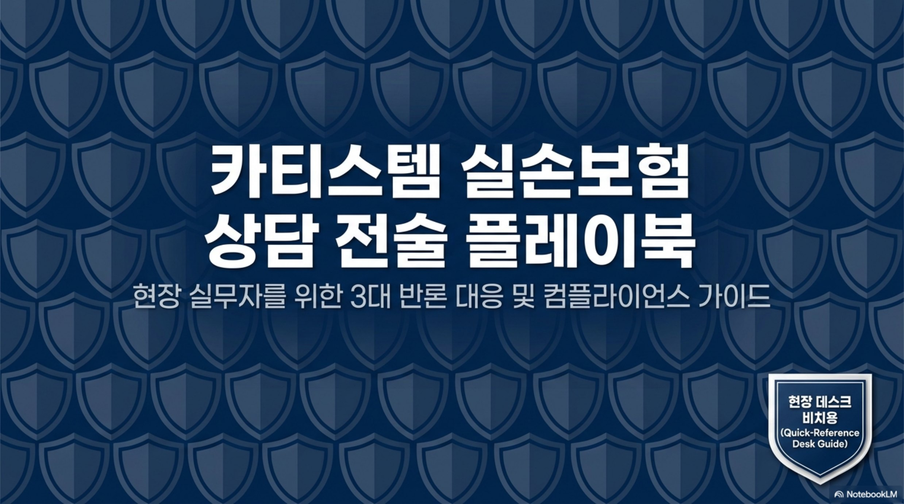
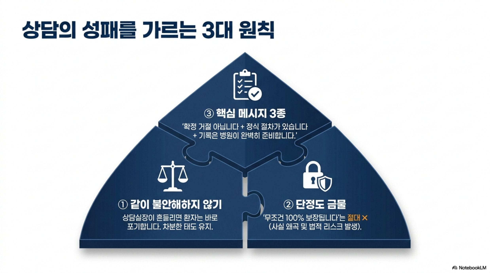
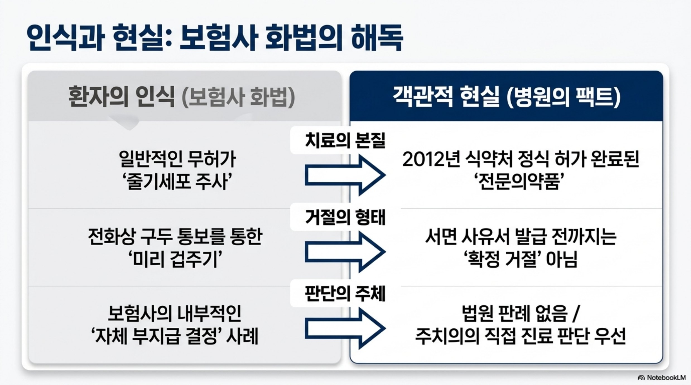
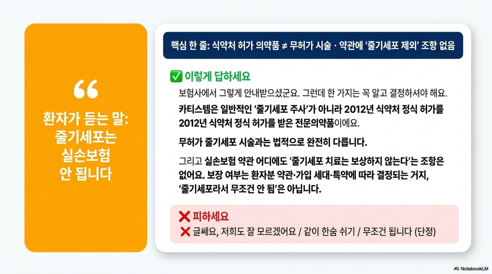
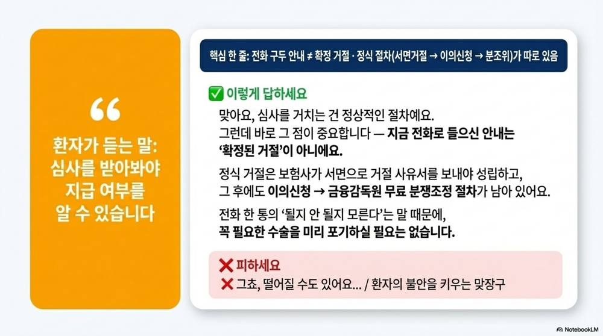
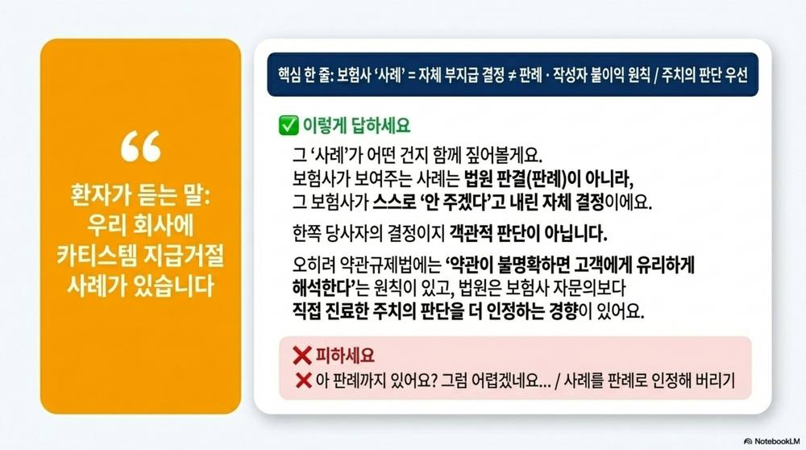
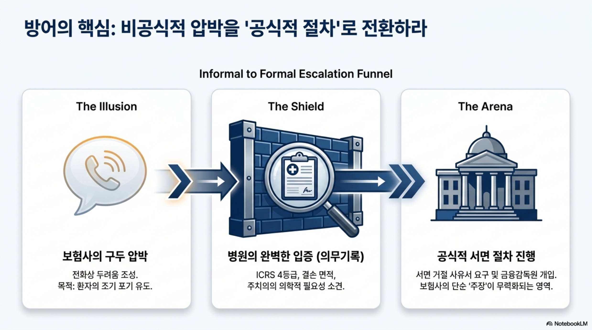
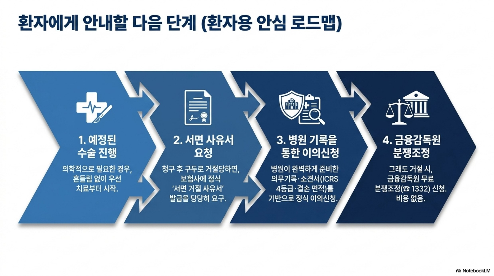
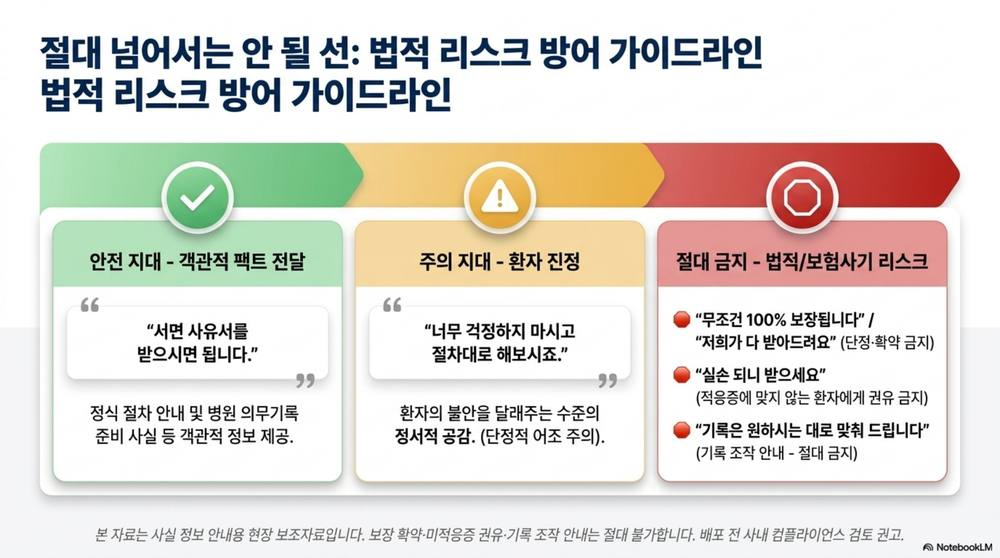

실손보험 상담
전술 플레이북
전화로 "실손 안 된다"는 안내를 받고 흔들리는 환자에게, 사실 정보를 차분히 전달하기 위한 3대 반론 대응 및 컴플라이언스 가이드입니다.
⚠️ 사용 범위
본 자료는 상담 실무자(의료진)용 응대 전술입니다. ✅/❌ 응대 스크립트는 내부 참고용이며 환자 화면에 그대로 보여주지 않습니다. 단, 「환자용 안심 로드맵」 단계는 환자에게 안내해도 좋습니다. 보장 확약·미적응증 권유·기록 조작 안내는 절대 불가합니다.
상담의 성패를 가르는 3대 원칙
1
같이 불안해하지 않기
상담실장이 흔들리면 환자는 바로 포기합니다. 차분한 태도를 유지하세요.
2
단정도 금물
"무조건 100% 보장됩니다"는 절대 금지 — 사실 왜곡 및 법적 리스크가 발생합니다.
3
핵심 메시지 3종
"확정 거절 아닙니다 + 정식 절차가 있습니다 + 기록은 병원이 준비합니다."
보험사 화법의 해독
| 환자의 인식 (보험사 화법) | 객관적 현실 (병원의 팩트) |
|---|---|
| 치료의 본질일반적인 무허가 '줄기세포 주사' | 2012년 식약처 정식 허가 완료된 '전문의약품' |
| 거절의 형태전화상 구두 통보를 통한 '미리 겁주기' | 서면 사유서 발급 전까지는 '확정 거절' 아님 |
| 판단의 주체보험사의 내부적 '자체 부지급 결정' 사례 | 법원 판례 없음 / 주치의의 직접 진료 판단 우선 |
3대 반론 대응
SCRIPT 1–3“줄기세포는 실손보험 안 됩니다
핵심: 식약처 허가 의약품 ≠ 무허가 시술 · 약관에 '줄기세포 제외' 조항 없음
✅ 이렇게 답하세요
"보험사에서 그렇게 안내받으셨군요. 그런데 카티스템은 일반 '줄기세포 주사'가 아니라 2012년 식약처 정식 허가를 받은 전문의약품이에요. 무허가 시술과는 법적으로 완전히 다릅니다. 그리고 실손 약관 어디에도 '줄기세포 치료는 보상하지 않는다'는 조항은 없어요. 보장 여부는 약관·가입 세대·특약에 따라 결정되는 거지, '줄기세포라서 무조건 안 됨'은 아닙니다."
❌ 피하세요
"글쎄요, 저희도 잘 모르겠어요" / 같이 한숨 쉬기 / "무조건 됩니다"(단정)
“심사를 받아봐야 지급 여부를 알 수 있습니다
핵심: 전화 구두 안내 ≠ 확정 거절 · 정식 절차(서면거절 → 이의신청 → 분쟁조정)가 따로 있음
✅ 이렇게 답하세요
"맞아요, 심사를 거치는 건 정상적인 절차예요. 그런데 바로 그 점이 중요합니다 — 지금 전화로 들으신 안내는 '확정된 거절'이 아니에요. 정식 거절은 보험사가 서면으로 거절 사유서를 보내야 성립하고, 그 후에도 이의신청 → 금융감독원 무료 분쟁조정 절차가 남아 있어요. 전화 한 통의 '될지 안 될지 모른다'는 말 때문에 꼭 필요한 수술을 미리 포기하실 필요는 없습니다."
❌ 피하세요
"그쵸, 떨어질 수도 있어요…" / 환자의 불안을 키우는 맞장구
“우리 회사에 카티스템 지급거절 사례가 있습니다
핵심: 보험사 '사례' = 자체 부지급 결정 ≠ 판례 · 작성자 불이익 원칙 / 주치의 판단 우선
✅ 이렇게 답하세요
"그 '사례'가 어떤 건지 함께 짚어볼게요. 보험사가 보여주는 사례는 법원 판결(판례)이 아니라, 그 보험사가 스스로 '안 주겠다'고 내린 자체 결정이에요. 한쪽 당사자의 결정이지 객관적 판단이 아닙니다. 오히려 약관규제법에는 '약관이 불명확하면 고객에게 유리하게 해석한다'는 원칙이 있고, 법원은 보험사 자문의보다 직접 진료한 주치의 판단을 더 인정하는 경향이 있어요."
❌ 피하세요
"아 판례까지 있어요? 그럼 어렵겠네요…" / 사례를 판례로 인정해 버리기
방어의 핵심: 비공식 압박 → 공식 절차
THE ILLUSION
📞
보험사의 구두 압박
전화상 두려움 조성. 목적: 환자의 조기 포기 유도.
THE SHIELD
🛡️
병원의 완벽한 입증
의무기록 — ICRS 4등급, 결손 면적, 주치의 의학적 필요성 소견.
THE ARENA
🏛️
공식적 서면 절차
서면 거절 사유서 요구 및 금융감독원 개입. 보험사의 단순 '주장'이 무력화되는 영역.
환자에게 안내할 다음 단계
1
예정된 수술 진행
의학적으로 필요한 경우, 흔들림 없이 우선 치료부터 시작합니다.
2
서면 사유서 요청
청구 후 구두로 거절당하면, 보험사에 정식 '서면 거절 사유서' 발급을 당당히 요구합니다.
3
병원 기록을 통한 이의신청
병원이 준비한 의무기록·소견서(ICRS 4등급·결손 면적)를 기반으로 정식 이의신청합니다.
4
금융감독원 분쟁조정
그래도 거절 시, 금융감독원 무료 분쟁조정(☎1332) 신청. 비용 없음.
법적 리스크 방어 가이드라인
🟢 안전 지대 — 객관적 팩트 전달
"서면 사유서를 받으시면 됩니다."
정식 절차 안내 및 병원 의무기록 준비 사실 등 객관적 정보 제공.
🟡 주의 지대 — 환자 진정
"너무 걱정하지 마시고 절차대로 해보시죠."
환자의 불안을 달래주는 수준의 정서적 공감. (단정적 어조 주의)
🔴 절대 금지 — 법적/보험사기 리스크
- "무조건 100% 보장됩니다" / "저희가 다 받아드려요"단정·확약 금지
- "실손 되니 받으세요"적응증에 맞지 않는 환자에게 권유 금지
- "기록은 원하시는 대로 맞춰 드립니다"기록 조작 안내 — 절대 금지
🖼️ 원본 슬라이드 전체보기 (9장) ▶









※ 안내 본 자료는 사실 정보 안내용 현장 보조자료입니다. 보장 확약·미적응증 권유·기록 조작 안내는 절대 불가합니다. 보장 여부는 환자의 약관·가입 세대·특약에 따라 다르며, 시술 적합성은 담당 의사가 판단합니다. 배포·활용 전 사내 컴플라이언스 검토를 권고합니다.
출처: 카티스템 실손보험 상담 전술 플레이북 (현장 데스크 비치용) · 내부 참고용